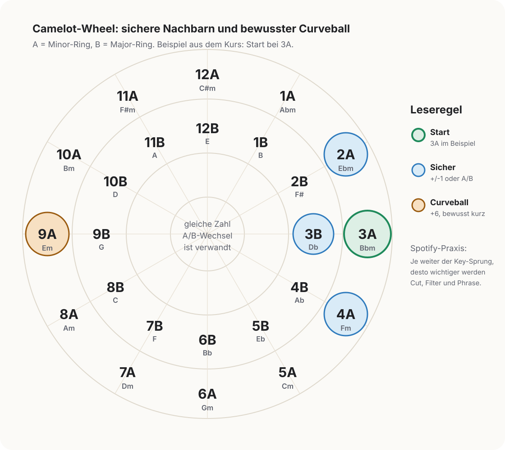

Camelot-Key
Ein DJ-Code fuer Tonarten, etwa 3A oder 3B. Die Zahl gibt die Position auf dem Camelot-Wheel an, der Buchstabe den Ring: A steht fuer Moll, B fuer Dur. Nahe Codes lassen sich harmonisch leichter verbinden.
Begriffe rund um Spotify Mix, das Camelot-System und Uebergangsentscheidungen. Nach Thema gruppiert, jeder Eintrag kurz genug zum Nachschlagen und konkret genug fuer echte Hoerentscheidungen.
Kompatible Tonarten liegen auf dem Camelot-Wheel nah beieinander: gleicher Key, benachbarte Zahl oder gleiche Zahl mit anderem Buchstaben. Ein gegenueberliegendes Feld ergaenzt sich nicht automatisch weich — ein Sprung wie 3A → 9A gilt als extreme, aufmerksamkeitsstarke Bewegung und eignet sich als bewusster Bruch, nicht als Standardblend. Quelle: Mixed In Key Harmonic Mixing Guide.

Ein DJ-Code fuer Tonarten, etwa 3A oder 3B. Die Zahl gibt die Position auf dem Camelot-Wheel an, der Buchstabe den Ring: A steht fuer Moll, B fuer Dur. Nahe Codes lassen sich harmonisch leichter verbinden.
Ein Kreis aus zwoelf Zahlen mit zwei Ringen. Praktisch zaehlt nicht die Musiktheorie dahinter, sondern die Navigationsregel: gleiche Zelle, Nachbarzelle oder gleiche Zahl mit anderem Buchstaben ist meist kompatibel, weit entfernte Felder erzeugen Spannung.
Uebergaenge so waehlen, dass sich Tonarten nicht unangenehm reiben. Das ersetzt nicht das Hoeren, raeumt aber die offensichtlichen Harmonie-Clashes aus dem Weg.
Gleiche Zahl, anderer Buchstabe, etwa 3A → 3B. Eng verwandte Tonarten, die heller (Dur) oder dunkler (Moll) wirken — eine sichere, subtile Bewegung.
Direkt benachbarte Zahl auf demselben Ring, etwa 3A → 2A oder 3A → 4A. Bleibt harmonisch frisch, ohne statisch zu wirken, und gilt als verlaessliche Standardbewegung.
Eine weit entfernte Camelot-Bewegung, meist sechs Zahlen entfernt (3A → 9A). Wirkt ueberraschend, ist aber nicht weich kompatibel — eher kurz, gefiltert oder auf eine harte Phrase gesetzt.
Beats per minute, das Tempo des Pulses. Kleine Differenzen lassen sich leicht blenden; grosse verlangen eher Cut, Ausblende oder einen klaren rhythmischen Trick.
Die kleinste gezaehlte Zeiteinheit der Musik. Spotify gibt die Uebergangslaenge in Takten an: wenige Takte ergeben einen kompakten Wechsel, mehr Takte einen ausgedehnten Blend.
Ein musikalischer Abschnitt, meist ueber 4, 8, 16 oder 32 Takte spuerbar. Uebergaenge an Phrasengrenzen wirken natuerlich, weil der Song dort ohnehin neu ansetzt.
Der gefuehlte erste Schlag eines Takts oder Abschnitts. Besonders harte Genrewechsel sitzen sauberer, wenn der neue Track genau auf einem Downbeat einsetzt.
Beide Songs laufen eine Weile gleichzeitig. Traegt, solange Tempo, Tonart und Bass nicht gegeneinander arbeiten.
Der alte Song endet fast abrupt, der neue setzt klar ein. Kein Notbehelf: bei grossen Genre-, Tempo- oder Tonartbruechen oft musikalischer als ein langer Blend.
Der Moment, in dem das Bassfundament vom alten auf den neuen Song uebergeben wird. Ein sauberer Basswechsel entscheidet oft zwischen elegant und matschig.
Equalizer: getrennte Kontrolle ueber Bass, Mitten und Hoehen. Beim Mixen ist der Bass am heikelsten, weil zwei Kick-/Bassfundamente gleichzeitig schnell unsauber werden.
Ein Effekt, der Frequenzbaender ausduennt. Ein Tiefpass laesst tiefe Anteile durch, ein Hochpass nimmt Bass weg. Filter lassen einen Bruch kontrolliert erscheinen.
Die gefuehlte Intensitaet eines Songs aus Drive, Dichte, Lautheit, Drum- und Vocal-Druck. Ueber Genregrenzen hinweg oft die tragfaehigere Bruecke als das Genre selbst.
Hoerbare Reibung: zwei Vocals, zwei Basslines, unpassende Akkorde oder rhythmisches Stolpern. Ein Signal, die Ueberlappung zu kuerzen oder einen Parameter zu isolieren.
Zurueck zur Mix-Entscheidungskarte. Primaere Quelle: Mixed In Key Harmonic Mixing Guide.